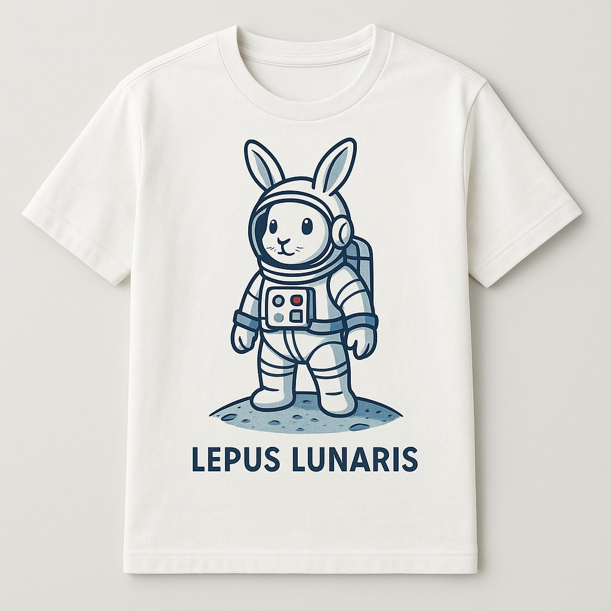

Lunar Rabbit T-Shirt – Lepus Lunaris Edition
This limited-edition T-shirt is inspired by the discovery of Lepus Lunaris, the legendary lunar rabbit. Featuring a sleek silhouette design and minimalist typography, it’s perfect for space enthusiasts, dreamers, and LERD supporters.
Made from 100% premium cotton, this shirt offers exceptional softness and durability. It comes in black with a moon-gray print, and is available in unisex sizes XS to XL. Each purchase helps fund future lunar exploration missions.
$50
Buy Now